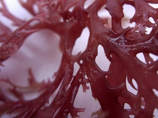

nctoolkit test page
Introduction
This is the test webpage to the nctoolkit builtin http server, it will load
jquery
, css and a photo.
The javascript is used to test the json data interface between the server and the webpage.
Contents
Photo

Javascript
Javascript & JSON